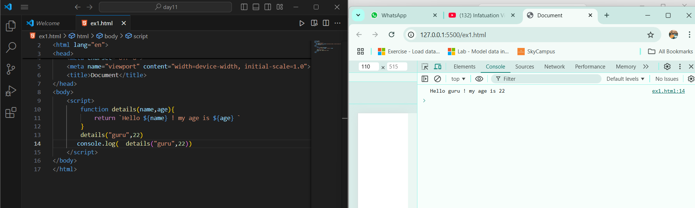

1. How would you define a function
that takes two numbers as parameters and returns their sum?
function sumOfTwoNumbers(a,b){
return (a + b);
}
sumOfTwoNumbers(20,50)
console.log(`sum of two numbers :${ sumOfTwoNumbers(20,50)}`)

2. If you define a function that accepts a string as a parameter,
how would you modify it to print the string in uppercase?
function string(a){
var b=a.toUpperCase()
console.log(b)
}
string("harsha")
3. In JavaScript, what happens if you pass an undefined
value as an argument to a function that expects a parameter?
function para(meter)
{
console.log(meter)
}
para(undefined)
function meter(para)
{
console.log(para)
console.log(para +2)
}
meter()
4. Suppose you have a function that takes an array as a parameter.
How would you check inside the function if the array is empty?
function array(array){
console.log(array)
}
array([])
5. write a function that takes two numbers as parameters
and returns their difference.
function twoNumber(a,b){
return `difference between two number: ${b-a}`;
}
twoNumber(20,30)
console.log( twoNumber(20,30))
6. Define a function that accepts a name and age as parameters,
and returns a string with a greeting like "Hello, [name]! You are [age] years old."
function details(name,age){
return `Hello ${name} ! my age is ${age} `
}
details("guru",22)
console.log( details("guru",22))

7. Write a function that takes a number as a parameter and
returns true if the number is a even number, otherwise false.
function number(a){
return a%2==0
}
number(19)
if(number(19)){
console.log("the number is a even number")
}else{
console.log("otherwise false")
}